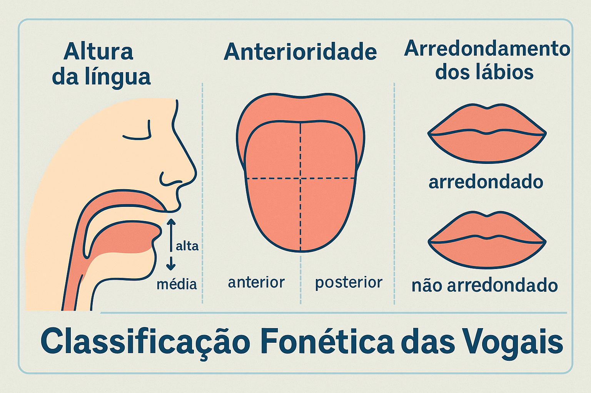
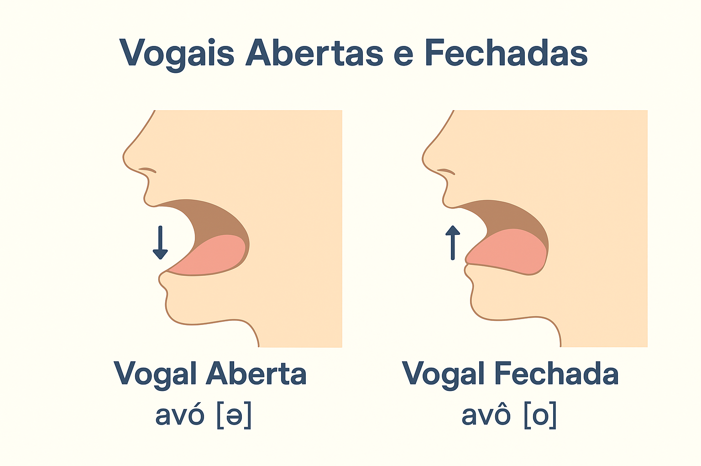

Classificação Fonética Detalhada das Vogais na Língua Portuguesa
No sistema sonoro da Língua Portuguesa, as vogais ocupam o vértice hierárquico da escala de sonoridade acústica. Produzidas sem que a corrente de ar expelida pelos pulmões encontre qualquer obstáculo ou constrição oclusiva nas cavidades supraglóticas, as vogais caracterizam-se por sua máxima amplitude vibratória, ressonância harmônica e estabilidade perceptiva. Na arquitetura silábica do português, elas exercem um papel estrutural insubstituível: são o núcleo obrigatório de toda sílaba, de tal modo que não existe sílaba sem vogal, nem sílaba com mais de um núcleo vocálico pleno.
Contudo, a aparente simplicidade da emissão vocálica oculta uma engrenagem neuromuscular de altíssima precisão. As infinitas modulações da cavidade bucal — atuando como uma caixa de ressonância acústica variável — convertem o tom laríngeo fundamental em timbres rigorosamente distintos. Para além da tradicional redução escolar às cinco letras do alfabeto latino (A, E, I, O, U), o sistema do português brasileiro mobiliza um inventário fonológico rico, composto por sete vogais orais tônicas, cinco vogais nasais e uma complexa rede de neutralizações em posição átona.
Neste tratado descritivo fundamentado na Fonética Articulatória e Acústica e na Fonologia do Português Contemporâneo, examinaremos os quatro eixos anatômicos de classificação das vogais (altura, anterioridade, arredondamento labial e ressonância nasofaríngea), o triângulo e trapézio vocálico internacional, a correlação entre vogais abertas e fechadas nos pares mínimos, o comportamento dos formantes acústicos e as regras de neutralização das vogais pretônicas e postônicas.

A fisiologia da produção vocálica: a cavidade oral como caixa de ressonância
Toda vogal resulta da passagem contínua do fluxo de ar pulmonar através da glote, onde as pregas vocais encontram-se em adução periódica, gerando uma onda sonora com vibração regular (vozeamento constante). Uma vez produzido na laringe, esse som básico propaga-se pelo trato vocal supraglótico (faringe, cavidade oral e fossas nasais).
A língua, graças à sua extraordinária flexibilidade muscular intrínseca e extrínseca, altera continuamente o volume e o formato das câmaras de ressonância da boca. Conforme demonstrado pela Fonética Acústica (LADEFOGED; JOHNSON, 2015; SILVA, 2010), essas alterações anatômicas geram picos específicos de energia acústica denominados formantes:
- Primeiro Formante (F1): correlaciona-se inversamente com a altura da língua (quanto mais baixa a língua e mais aberta a boca, maior é a frequência em Hertz de F1);
- Segundo Formante (F2): correlaciona-se diretamente com a anterioridade da língua (quanto mais avançada a língua em direção aos dentes, maior é a frequência de F2);
- Arredondamento labial: o alongamento do trato vocal provocado pela projeção dos lábios abaixa sistematicamente todas as frequências formânticas.
O sistema vocálico segundo Mattoso Câmara Jr.
Para Joaquim Mattoso Câmara Jr. (1970, p. 43), o sistema vocálico do português brasileiro estrutura-se em uma matriz triangular simétrica de oposições fonológicas. Em posição tônica, a língua opõe uma vogal máxima aberta central (/a/) a três graus graduais de abertura na série anterior não arredondada (/ɛ, e, i/) e três graus correspondentes na série posterior arredondada (/ɔ, o, u/). Essa simetria constitui uma das marcas mais elegantes da fonologia românica.
Os quatro parâmetros da classificação articulatória
Para classificar cientificamente qualquer segmento vocálico da Língua Portuguesa, é indispensável analisar o cruzamento de quatro coordenadas anatômicas fundamentais:
1. Altura da língua (grau de abertura bucal)
Mede a distância vertical existente entre o dorso da língua e o palato (céu da boca):
- Vogais altas (ou fechadas): a língua aproxima-se ao máximo do palato duro ou do véu palatino, deixando uma fresta estreita para o ar sem gerar atrito fricativo: [i] (como em fita, vi) e [u] (como em uva, luva);
- Vogais médias-altas (médias fechadas): a língua ocupa uma posição intermediária superior: [e] (como em medo, você) e [o] (como em tolo, avô);
- Vogais médias-baixas (médias abertas): a língua desce em direção ao assoalho da boca, ampliando a cavidade oral: [ɛ] (como em festa, pé) e [ɔ] (como em porta, avó);
- Vogal baixa (ou aberta): a mandíbula abaixa-se completamente e a língua repousa plana no fundo da cavidade bucal, propiciando abertura máxima: [a] (como em casa, pá).
2. Anterioridade ou localização (zona de articulação)
Indica a região horizontal do trato bucal em que a massa da língua se concentra durante a emissão:
- Vogais anteriores (ou palatais): o corpo da língua projeta-se para a frente, aproximando-se dos alvéolos e do palato duro: [i], [e], [ɛ];
- Vogal central: a língua permanece em posição neutra e plana no centro da boca: [a];
- Vogais posteriores (ou velares): a raiz e o dorso da língua recuam em direção ao palato mole (véu palatino) e à parede da faringe: [u], [o], [ɔ].
3. Arredondamento dos lábios (labialização)
Refere-se ao papel ativo dos lábios como modificadores acústicos da extremidade anterior do trato vocal:
- Vogais arredondadas (ou labializadas): os lábios projetam-se ativamente para a frente, formando uma abertura circular que amplia o comprimento do trato vocal. No português nativo, todas as vogais posteriores são arredondadas: [u], [o], [ɔ];
- Vogais não arredondadas (ou não labializadas): os lábios mantêm-se neutros ou distendidos lateralmente em sorriso: [i], [e], [ɛ] e a central [a].
4. Ressonância nasofaríngea (oralidade versus nasalidade)
Controlada pelo movimento de válvula esfincteriana do véu palatino (palato mole):
- Vogais orais: o véu palatino eleva-se contra a parede posterior da faringe, bloqueando completamente a entrada das fossas nasais. O ar ressoa unicamente na cavidade oral: [a, ɛ, e, i, ɔ, o, u];
- Vogais nasais: o véu palatino abaixa-se, mantendo aberta a comunicação com a nasofaringe. A corrente expiratória ressoa simultaneamente na boca e nas cavidades nasais: [ã] (em lã, canto), [ẽ] (em dente, vento), [ĩ] (em cinto, limpo), [õ] (em onda, ombro) e [ũ] (em fundo, mundo).
Vogais Orais Tônicas (7 Fonemas)
Apresentam ressonância exclusivamente bucal com máxima diferenciação de timbres na sílaba tônica.
Inventário: /a, ɛ, e, i, ɔ, o, u/.
Exemplos contrastivos: pé (/pɛ/) ≠ pê (/pe/); pó (/pɔ/) ≠ pô (/po/).
Vogais Nasais (5 Fonemas)
Apresentam ressonância mista buconasal. Na série nasal do português brasileiro, não há oposição fonológica entre vogais médias abertas e fechadas.
Inventário: /ã, ẽ, ĩ, õ, ũ/.
Exemplos: canto (/kãtu/), tempo (/tẽpu/), tinta (/tʃĩtɐ/).
O Triângulo Vocálico do Português Brasileiro
A representação geométrica bidimensional consagrada pela fonologia internacional e descrita por Cagliari (2009) organiza as sete vogais orais fundamentais em função da anterioridade (eixo horizontal) e da altura da língua (eixo vertical):
O Trapézio das Vogais Orais Tônicas
ANTERIORES CENTRAL POSTERIORES
(Não arredondadas) (Arredondadas)
ALTAS /i/ /u/
MÉDIAS-ALTAS /e/ /o/
MÉDIAS-BAIXAS /ɛ/ /ɔ/
BAIXA /a/
No subsistema nasal, como não ocorre contraste entre médias abertas e médias fechadas, o número de unidades reduz-se a cinco fonemas simétricos: /ĩ/ e /ũ/ (altas), /ẽ/ e /õ/ (médias fechadas nasalizadas) e /ã/ (baixa central nasalizada).

A oposição de abertura em sílaba tônica: pares mínimos
A diferença de timbre entre as vogais médias abertas (/ɛ, ɔ/) e fechadas (/e, o/) não constitui mera sutileza de dicção regional: é uma oposição fonológica funcional com pleno poder de distinção lexical e gramatical. A substituição do timbre aberto pelo fechado engendra palavras e categorias inteiramente diversas:
- Avó (/a-ˈv-ɔ/) versus Avô (/a-ˈv-o/): oposição entre média-baixa posterior arredondada e média-alta posterior arredondada que distingue o gênero biológico e gramatical;
- Sede (/ˈs-ɛ-dʒ-i/ - vontade de beber) versus Sede (/ˈs-e-dʒ-i/ - domicílio / matriz): oposição entre média-baixa anterior e média-alta anterior;
- Pelo (/ˈp-ɛ-l-u/ - verbo pelar) versus Pelo (/ˈp-e-l-u/ - substantivo / pelagem): distinção entre classe verbal e nominal;
- Móço (/ˈm-ɔ-s-u/ - verbo moçar) versus Moço (/ˈm-o-s-u/ - jovem): distinção semântica e gramatical.
Atenção: a metafonia vocálica na flexão do português
A alternância entre vogais abertas e fechadas rege o fenômeno morfológico da metafonia na flexão de gênero e número de diversos substantivos e adjetivos paroxítonos. No singular masculino, a vogal tônica é média fechada (/o/); no plural e no feminino, a vogal abre-se para média aberta (/ɔ/): o ôvo (/o/) → os óvos (/ɔ/); o pôrto (/o/) → os pórtos (/ɔ/); nôvo (/o/) → nóva (/ɔ/) → nóvos (/ɔ/). Trata-se de uma lei fonológica milenar herdada da evolução do latim vulgar.
| Fonema (IPA) | Altura da Língua | Zona de Articulação | Lábios | Nasalidade | Exemplo Ortográfico | Transcrição Fonética Ampla |
|---|---|---|---|---|---|---|
| /i/ | Alta (fechada) | Anterior (palatal) | Não arredondada | Oral | fita, vi | [ˈfi.tɐ], [ˈvi] |
| /e/ | Média-alta (fechada) | Anterior (palatal) | Não arredondada | Oral | medo, você | [ˈme.du], [vo.ˈse] |
| /ɛ/ | Média-baixa (aberta) | Anterior (palatal) | Não arredondada | Oral | festa, pé | [ˈfɛs.tɐ], [ˈpɛ] |
| /a/ | Baixa (aberta) | Central | Não arredondada | Oral | casa, pá | [ˈka.zɐ], [ˈpa] |
| /ɔ/ | Média-baixa (aberta) | Posterior (velar) | Arredondada | Oral | porta, avó | [ˈpɔʁ.tɐ], [a.ˈvɔ] |
| /o/ | Média-alta (fechada) | Posterior (velar) | Arredondada | Oral | tolo, avô | [ˈto.lu], [a.ˈvo] |
| /u/ | Alta (fechada) | Posterior (velar) | Arredondada | Oral | luz, uva | [ˈlus], [ˈu.vɐ] |
| /ã/ | Baixa (centralizada) | Central | Não arredondada | Nasal | lã, canto | [ˈlɐ̃], [ˈkɐ̃.tu] |
| /ẽ/ | Média-alta | Anterior | Não arredondada | Nasal | vento, dente | [ˈvẽ.tu], [ˈdẽ.tʃi] |
| /ĩ/ | Alta | Anterior | Não arredondada | Nasal | cinto, limpo | [ˈsĩ.tu], [ˈlĩ.pu] |
| /õ/ | Média-alta | Posterior | Arredondada | Nasal | onda, tombo | [ˈõ.dɐ], [ˈtõ.bu] |
| /ũ/ | Alta | Posterior | Arredondada | Nasal | mundo, fundo | [ˈmũ.du], [ˈfũ.du] |
Neutralização vocálica em posições átonas
O inventário pleno de sete vogais orais do português brasileiro manifesta-se com vigor máximo exclusivamente na sílaba tônica. Quando a vogal migra para uma sílaba átona, a perda de energia expiratória provoca o fenômeno fonológico da neutralização (apagamento das oposições de abertura):
- Em posição pretônica (antes da tônica): as vogais médias abertas /ɛ/ e /ɔ/ neutralizam-se geralmente em favor das médias fechadas /e/ e /o/. Assim, dizemos belo com [ɛ], mas beleza com [e]; bola com [ɔ], mas boleiro com [o]. O sistema tônico de 7 vogais reduz-se a um subsistema pretônico de 5 vogais (/i, e, a, o, u/);
- Em posição postônica não final (medial): ocorre redução semelhante a 5 unidades (/i, e, a, o, u/), como em número, árvore;
- Em posição postônica final (término de palavra): atinge-se o grau máximo de redução vocálica da língua. As vogais médias /e/ e /o/ sofrem sistematicamente alçamento fonético para as vogais altas correspondentes [i] e [u]. Assim, escrevemos leite mas pronunciamos [ˈlej.tʃi]; escrevemos livro mas pronunciamos [ˈli.vɾu]. Em final absoluto, o português brasileiro opera com apenas 3 fonemas vocálicos de contraste: /i/, /a/ e /u/.
Análise fonética na prática: dissecação articulatória
Observe a identificação e a discriminação dos parâmetros em vocábulos contrastivos:
Caso 1: Vocábulo "Pântano"
Sílaba 1 (pân): a vogal nuclear é /ã/ — vogal baixa central nasalizada acompanhada de consoante oclusiva bilabial surda (/p/);
Sílaba 2 (ta): a vogal nuclear é /a/ pretônica oral (ou reduzida [ɐ]);
Sílaba 3 (no): a vogal grafada com o encontra-se em posição postônica final, sofrendo alçamento fonético para a vogal alta posterior arredondada [u] ([ˈpɐ̃n.tɐ.nu]).
Caso 2: A Oposição "Selo" (substantivo) versus "Selo" (verbo selar)
- O sêlo (substantivo): pronuncia-se com vogal média-alta fechada anterior [e] ([ˈse.lu]);
- Eu sélo (verbo): pronuncia-se com vogal média-baixa aberta anterior [ɛ] ([ˈsɛ.lu]). A distinção articulatória de alguns milímetros na altura da língua é a única responsável pela diferenciação gramatical entre o objeto postal e o ato verbal.
Esquema pedagógico: o itinerário analítico da classificação vocálica
Roteiro de Identificação Vocálica
Isole a vogal sob análise
→ Passo 1 (Ressonância): O ar sai apenas pela boca (Oral) ou também pelo nariz (Nasal)?
→ Passo 2 (Posição da língua no eixo vertical): A boca está muito fechada (Alta), intermediária (Média) ou muito aberta (Baixa)?
→ Passo 3 (Posição da língua no eixo horizontal): A língua avançou (Anterior), ficou no meio (Central) ou recuou (Posterior)?
→ Passo 4 (Formato labial): Os lábios estão arredondados em tubo (Arredondada) ou distendidos (Não arredondada)?
→ Passo 5 (Contexto prosódico): A vogal é tônica, pretônica ou postônica final?
Questões para estudo e fixação
Questão 1 (Classificação Articulatória / Concurso Público)
O fonema vocálico presente na palavra "pé" classifica-se foneticamente como:
A) Vogal alta, anterior, arredondada e oral.
B) Vogal média-baixa (aberta), anterior, não arredondada e oral.
C) Vogal média-alta (fechada), posterior, arredondada e nasal.
D) Vogal baixa, central, arredondada e nasal.
Ver resposta comentada
Resposta comentada: Alternativa B. A vogal de pé é representada foneticamente pelo símbolo [ɛ]. Ela é produzida com a língua em posição intermediária inferior (média-baixa/aberta), projetada para a frente da cavidade oral (anterior), com os lábios distendidos em fresta (não arredondada) e com o véu palatino ocluindo a cavidade nasal (oral).
Questão 2 (Pares Mínimos Vocálicos)
Assinale o par de palavras em que a distinção de significado fundamenta-se estritamente na oposição entre vogal média-baixa aberta e vogal média-alta fechada:
A) Fita / Fato.
B) Avó / Avô.
C) Vila / Vela.
D) Canto / Conto.
Ver resposta comentada
Resposta comentada: Alternativa B. Em avó e avô, todos os demais segmentos fonológicos são idênticos (/a-v-/); a única diferença opositiva reside no grau de abertura da vogal posterior arredondada: média-baixa aberta (/ɔ/) em avó e média-alta fechada (/o/) em avô.
Questão 3 (Acústica e Formantes)
De acordo com a fonética acústica, por que a vogal /a/ apresenta a maior frequência do primeiro formante (F1) entre todas as vogais do português?
Ver resposta comentada
Resposta comentada: Porque a frequência do primeiro formante (F1) é inversamente proporcional à altura da língua na boca (ou diretamente proporcional à abertura da mandíbula). Como a vogal /a/ é a vogal mais baixa e aberta do sistema, o volume da faringe diminui e o espaço bucal atinge amplitude máxima, elevando a frequência acústica de ressonância de F1 para a faixa dos 700 a 900 Hz.
Questão 4 (Redução Vocálica em Postônica Final)
Por que a pronúncia padrão brasileira de vocábulos como "tomate" e "mato" resulta, nos estudos fonéticos, nas transcrições [to.ˈma.tʃi] e [ˈma.tu]?
Ver resposta comentada
Resposta comentada: Porque na posição postônica final (fim absoluto de palavra átona), opera a lei fonológica de neutralização máxima do português brasileiro. As vogais médias /e/ e /o/ sofrem alçamento articulatório, convergindo respectivamente para as vogais altas [i] e [u]. Esse processo é fonético e não afeta a grafia ortográfica oficial com as letras e e o.
Questão 5 (Transposição Didática na Alfabetização)
Qual é a razão científica pela qual crianças em fase inicial de alfabetização frequentemente escrevem "mininu" em vez de "menino"?
Ver resposta comentada
Resposta comentada: A criança ancora sua escrita na percepção fônica oral real. Como a primeira sílaba (me-) é pretônica e sofre alteamento vocálico dialetal ([mi-]), e a última sílaba (-no) é postônica final e sofre alçamento fonético regular para [nu] ([mi.ˈni.nu]), a criança reproduz fielmente os fonemas que escuta e articula. O professor ciente da classificação fonética acolhe esse fato como hipótese psicogenética legítima e ensina a convenção ortográfica histórica sem estigmatizar o estudante.
Resumo da classificação fonética detalhada das vogais
- Vogais: sons produzidos com passagem totalmente livre do ar pela cavidade bucal, sendo o núcleo indispensável de qualquer sílaba;
- Quanto à altura da língua: altas ([i, u]), médias-altas ([e, o]), médias-baixas ([ɛ, ɔ]) e baixa ([a]);
- Quanto à anterioridade: anteriores ([i, e, ɛ]), central ([a]) e posteriores ([u, o, ɔ]);
- Quanto ao arredondamento: arredondadas ([u, o, ɔ]) e não arredondadas ([i, e, ɛ, a]);
- Quanto à ressonância: orais (ar sai apenas pela boca) e nasais (ar ressoa concomitantemente pelo nariz);
- O português brasileiro possui 7 vogais orais tônicas e 5 vogais nasais;
- A distinção entre vogais abertas (/ɛ, ɔ/) e fechadas (/e, o/) cria pares mínimos cruciais de significado (avó/avô, sede/sede);
- Em posições átonas, ocorrem processos regulares de neutralização e alçamento vocálico (especialmente em final de palavras: [i] e [u]).
Perguntas frequentes sobre a classificação das vogais
Por que dizemos que existem 7 vogais orais se o alfabeto só tem 5 letras vocálicas?
Porque o alfabeto latino possui apenas as letras A, E, I, O, U, mas a língua falada produz 7 fonemas orais distintos em sílaba tônica. As letras E e O desdobram-se em dois fonemas cada: o aberto (/ɛ, ɔ/ como em pé e pó) e o fechado (/e, o/ como em você e avô).
O que determina se uma vogal é oral ou nasal?
A posição do véu palatino (palato mole). Quando ele sobe e fecha a passagem nasal, o som é oral. Quando ele desce e permite que o ar circule também pelas fossas nasais, o som torna-se nasal (como em mãe, canto, tampa).
Qual é a vogal mais aberta da Língua Portuguesa?
É a vogal /a/ (baixa central oral), articulada com o afastamento máximo entre a língua e o palato e a maior amplitude da cavidade bucal.
O que é metafonia vocálica?
É a alteração do timbre da vogal média tônica fechada (/o/) de um substantivo ou adjetivo masculino singular para o timbre aberto (/ɔ/) no plural ou feminino correspondente (ex.: fogo com /o/ fechado → fogos com /ɔ/ aberto).
Todas as vogais posteriores do português são arredondadas?
Sim. No sistema fonológico nativo da Língua Portuguesa, as vogais posteriores /u/, /o/ e /ɔ/ são invariavelmente articuladas com a projeção circular arredondada dos lábios.
O que significa alçamento vocálico?
É o movimento fonético em que uma vogal média ([e] ou [o]) sobe na cavidade bucal, sendo pronunciada como vogal alta ([i] ou [u]), fenômeno extremamente comum em sílabas átonas finais no Brasil (como dizer peixe como [pej.ʃi]).
Por que as vogais nasais não possuem variação entre aberta e fechada?
Porque o acoplamento do trato vocal com a cavidade nasal amortece acusticamente os formantes superiores, neutralizando a distinção auditiva entre graus intermediários de abertura.
Como o estudo dos formantes das vogais é aplicado na tecnologia?
A medição matemática de F1 e F2 é a base utilizada em softwares de inteligência artificial de reconhecimento de fala, assistentes virtuais de voz e sintetizadores de áudio digital.
Considerações finais
A classificação fonética detalhada das vogais do português revela a sofisticação da engrenagem biológica e cognitiva que sustenta a linguagem humana. Ao decompor as coordenadas de altura, anterioridade, arredondamento e nasalidade, o estudante e o educador abandonam a visão simplória da gramática de decoração alfabética e passam a contemplar a língua como um organismo acústico vivo, dinâmico e harmonioso.
Dominar a arquitetura vocálica confere segurança teórica e prática para compreender as regras ortográficas, a acentuação oficial, as variações dialetais dos sotaques brasileiros e as transformações sonoras da fala espontânea, enriquecendo o instrumental analítico de professores, vestibulandos e pesquisadores das ciências da linguagem.
Conteúdos relacionados
- Fonologia: fonemas, sílabas e estrutura sonora da Língua Portuguesa — Índice de Conteúdos
- Fonema e Letra: Uma distinção fundamental na análise linguística
- Tipos de Fonemas: Vogais, Semivogais e Consoantes
- Fonologia das Semivogais (Glides / Semiconsoantes)
- Hiatos, Ditongos e Tritongos: como identificar e exemplos
- Encontros Vocálicos e Consonantais: Quando os sons se encontram
- O Som das Palavras: Sílaba, Tonicidade e Prosódia
- Fonologia e Fonética: distinções conceituais
- Processo de Elisão (ou Supressão) de Segmentos Fonológicos
Referências
- CAGLIARI, Luiz Carlos. Alfabetização e Linguística. 10. ed. São Paulo: Scipione, 2009.
- CÂMARA JR., Joaquim Mattoso. Estrutura da Língua Portuguesa. 20. ed. Petrópolis: Vozes, 2011.
- CÂMARA JR., Joaquim Mattoso. Problemas de Linguística Descritiva. 18. ed. Petrópolis: Vozes, 2004.
- CRYSTAL, David. A Dictionary of Linguistics and Phonetics. 6. ed. Oxford: Blackwell Publishing, 2008.
- DUBOIS, Jean et al. Dicionário de Linguística. Tradução de Izidoro Blikstein. São Paulo: Cultrix, 2014.
- LADEFOGED, Peter; JOHNSON, Keith. A Course in Phonetics. 7. ed. Boston: Cengage Learning, 2015.
- SAUSSURE, Ferdinand de. Curso de Linguística Geral. 28. ed. São Paulo: Cultrix, 2012.
- SILVA, Thaïs Cristófaro. Fonética e Fonologia do Português: roteiro de estudos e guia de exercícios. 10. ed. São Paulo: Contexto, 2010.
- TRUBETZKOY, Nikolai S. Principes de phonologie. Traduction de J. Cantineau. Paris: Klincksieck, 1949.
Explore outros conteúdos
Continue seus estudos acessando outras seções do site Mestre Kira: